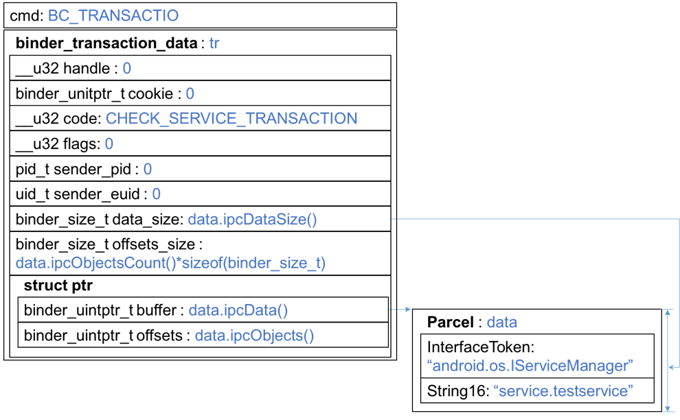

Binder学习笔记（三）—— binder客户端是如何组织checkService数据的 ？
起点从TestClient.cpp的main函数发起：1
2
3
4
5
6
7int main() {
sp < IServiceManager > sm = defaultServiceManager();
sp < IBinder > binder = sm->getService(String16("service.testservice"));
sp<ITestService> cs = interface_cast < ITestService > (binder);
cs->test();
return 0;
}
前文已经分析过sm是new BpServiceManager(new BpBinder(0))，于是sm->getService(…)的行为应该找BpServiceManager::getService(…)，frameworks/native/libs/binder/IserviceManager.cpp:1341
2
3
4
5
6
7
8
9
10
11
12
13
14
15
16
17
18
19 virtual sp<IBinder> getService(const String16& name) const
{
unsigned n;
for (n = 0; n < 5; n++){
sp<IBinder> svc = checkService(name); // 这里是关键代码
if (svc != NULL) return svc;
ALOGI("Waiting for service %s...\n", String8(name).string());
sleep(1);
}
return NULL;
}
virtual sp<IBinder> checkService( const String16& name) const
{
Parcel data, reply;
data.writeInterfaceToken(IServiceManager::getInterfaceDescriptor());
data.writeString16(name);
remote()->transact(CHECK_SERVICE_TRANSACTION, data, &reply);
return reply.readStrongBinder();
}
BpServiceManager::remote()返回的就是成员变量mRemote，前文也分析过了，也即是new BpBinder(0)。因此remote()->transact(…)调用的是BpBinder::transact(…)，
frameworks/native/libs/binder/BpBinder.cpp:1591
2
3
4
5
6
7
8
9
10
11
12
13status_t BpBinder::transact(
uint32_t code, const Parcel& data, Parcel* reply, uint32_t flags)
{ // code=CHECK_SERVICE_TRANSACTION, flags=0
// Once a binder has died, it will never come back to life.
if (mAlive) {
status_t status = IPCThreadState::self()->transact(
mHandle, code, data, reply, flags);
if (status == DEAD_OBJECT) mAlive = 0;
return status;
}
return DEAD_OBJECT;
}
IPCThreadState::self()从命名上来看应该又是个工厂类（前文遇到的ProcessState就是这么命名的），它是个线程单体，每线程一份。具体实现暂且不表，因为在当前上下文中其transact(…)跟线程单体没啥关系，我们直接进入IPCThreadState::transact(…)函数。
frameworks/native/libs/binder/IPCThreadState.cpp:5481
2
3
4
5
6
7
8
9
10
11
12
13
14
15
16
17
18
19
20
21
22
23
24
25
26
27
28
29
30
31
32
33
34
35
36
37
38
39
40
41
42
43
44
45
46
47
48
49
50
51
52
53
54
55
56
57
58
59
60
61status_t IPCThreadState::transact(int32_t handle,
uint32_t code, const Parcel& data,
Parcel* reply, uint32_t flags)
{ // handle=0, code=CHECK_SERVICE_TRANSACTION, flags=0
status_t err = data.errorCheck();
flags |= TF_ACCEPT_FDS;
IF_LOG_TRANSACTIONS() {
TextOutput::Bundle _b(alog);
alog << "BC_TRANSACTION thr " << (void*)pthread_self() << " / hand "
<< handle << " / code " << TypeCode(code) << ": "
<< indent << data << dedent << endl;
}
if (err == NO_ERROR) {
LOG_ONEWAY(">>>> SEND from pid %d uid %d %s", getpid(), getuid(),
(flags & TF_ONE_WAY) == 0 ? "READ REPLY" : "ONE WAY");
err = writeTransactionData(BC_TRANSACTION, flags, handle, code, data, NULL);
}
if (err != NO_ERROR) {
if (reply) reply->setError(err);
return (mLastError = err);
}
if ((flags & TF_ONE_WAY) == 0) {
if (code == 4) { // relayout
ALOGI(">>>>>> CALLING transaction 4");
} else {
ALOGI(">>>>>> CALLING transaction %d", code);
}
if (reply) { // 在checkService(…)传入了非空的reply参数
err = waitForResponse(reply);
} else {
Parcel fakeReply;
err = waitForResponse(&fakeReply);
}
if (code == 4) { // relayout
ALOGI("<<<<<< RETURNING transaction 4");
} else {
ALOGI("<<<<<< RETURNING transaction %d", code);
}
IF_LOG_TRANSACTIONS() {
TextOutput::Bundle _b(alog);
alog << "BR_REPLY thr " << (void*)pthread_self() << " / hand "
<< handle << ": ";
if (reply) alog << indent << *reply << dedent << endl;
else alog << "(none requested)" << endl;
}
} else {
err = waitForResponse(NULL, NULL);
}
return err;
}
这么长一大段，关键代码只有两行，从命名上来看就是一次请求和接收应答的过程。我们先研究请求数据。
frameworks/native/libs/binder/IPCThreadState.cpp:9041
2
3
4
5
6
7
8
9
10
11
12
13
14
15
16
17
18
19
20
21
22
23
24
25
26
27
28
29
30
31
32
33
34
35
36status_t IPCThreadState::writeTransactionData(int32_t cmd, uint32_t binderFlags,
int32_t handle, uint32_t code, const Parcel& data, status_t* statusBuffer)
{ // cmd=BC_TRANSACTION, binderFlags=TF_ACCEPT_FDS, handle=0,
// code=CHECK_SERVICE_TRANSACTION,
binder_transaction_data tr;
tr.target.ptr = 0; /* Don't pass uninitialized stack data to a remote process */
tr.target.handle = handle;
tr.code = code;
tr.flags = binderFlags;
tr.cookie = 0;
tr.sender_pid = 0;
tr.sender_euid = 0;
const status_t err = data.errorCheck();
if (err == NO_ERROR) {
tr.data_size = data.ipcDataSize();
tr.data.ptr.buffer = data.ipcData();
tr.offsets_size = data.ipcObjectsCount()*sizeof(binder_size_t);
tr.data.ptr.offsets = data.ipcObjects();
} else if (statusBuffer) {
tr.flags |= TF_STATUS_CODE;
*statusBuffer = err;
tr.data_size = sizeof(status_t);
tr.data.ptr.buffer = reinterpret_cast<uintptr_t>(statusBuffer);
tr.offsets_size = 0;
tr.data.ptr.offsets = 0;
} else {
return (mLastError = err);
}
mOut.writeInt32(cmd);
mOut.write(&tr, sizeof(tr));
return NO_ERROR;
}
该函数就是把一堆参数组装进binder_transaction_data结构体，并写进mOut。其中data是在checkService(…)中组装的Parcel数据：

data.ipcObjectsCount()*sizeof(binder_size_t)以及data.ipcObjects()分别是什么呢？从命名上来看，他应该是指保存在data中的抽象数据类型的数据，显然在组织checkService时的Parcel数据中是没有抽象数据类型的，可以先不深究它。